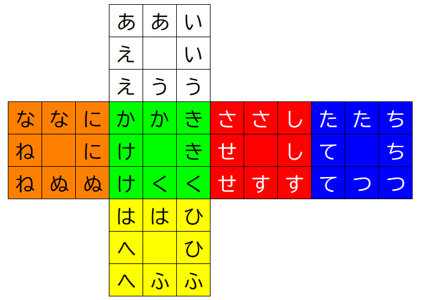

ルービックキューブ関連 > 目隠し
3BLD、4BLD、5BLDで私が使っている手順などのメモ。

| ピース | 文字 | 手順 | 説明 |
|---|---|---|---|
| RU | さ | B' R B (M2) B' R' B | |
| RB | し | R B' R' B (M2) B' R B R' | B' で目的のピースが動くので退避しておく。 |
| RD | す | B' R' B (M2) B' R B | |
| RF | せ | B' R2 B (M2) B' R2 B | |
| UR | い | R' U R U' (M2) U R' U' R | 退避。 |
| BR | て | U R' U' (M2) U R U' | |
| DR | ひ | U R2 U' (M2) U R2 U' | |
| FR | き | U R U' (M2) U R' U' | |
| LU | な | B L' B' (M2) B L B' | |
| LF | に | B L2 B' (M2) B L2 B' | |
| LD | ぬ | B L B' (M2) B L' B' | |
| LB | ね | L' B L B' (M2) B L' B' L | 退避。 |
| UL | え | L U' L' U (M2) U' L U L' | 退避。 |
| BL | ち | U' L U (M2) U' L' U | |
| DL | へ | U' L2 U (M2) U' L2 U | |
| FL | け | U' L' U (M2) U' L U | |
| BU | た | (U' M')×3 (U' M) (U' M')×4 | |
| UF | う | U2 M' U2 M' | 偶数番目はDBの手順。 |
| DB | ふ | M U2 M U2 | 偶数番目はUFの手順。 |
| FU | か | D M' (U R2 U') M (U R2 U') D' M2 | 偶数番目はBDの手順。 |
| BD | つ | M2 D (U R2 U') M' (U R2 U') M D' | 偶数番目はFUの手順。 |
| UB | あ | M2 | 基本手順。 |
(D' L2 D) M2 (D' L2 D)
エッジとコーナーの文字数が奇数であれば、エッジとコーナーの間に回す。
| ピース | 文字 | 手順 | 説明 |
|---|---|---|---|
| UBR | い | R D' (F2 Rw2 U' Rw' F Rw' F2 R) D R' | |
| URF | う | F (F2 Rw2 U' Rw' F Rw' F2 R) F' | |
| UFL | え | F R' (F2 Rw2 U' Rw' F Rw' F2 R) R F' | |
| FLU | か | F' D (F2 Rw2 U' Rw' F Rw' F2 R) D' F | F面はまずFDLに持っていく。 |
| FUR | き | F2 D (F2 Rw2 U' Rw' F Rw' F2 R) D' F2 | |
| FRD | く | F D (F2 Rw2 U' Rw' F Rw' F2 R) D' F' | |
| FDL | け | D (F2 Rw2 U' Rw' F Rw' F2 R) D' | |
| RFU | さ | R' (F2 Rw2 U' Rw' F Rw' F2 R) R | R面はRDFに持っていく。 |
| RUB | し | R2 (F2 Rw2 U' Rw' F Rw' F2 R) R2 | |
| RBD | す | R (F2 Rw2 U' Rw' F Rw' F2 R) R' | |
| RDF | せ | F2 Rw2 U' Rw' F Rw' F2 R | 基本手順。 |
| BRU | た | R' F (F2 Rw2 U' Rw' F Rw' F2 R) F' R | |
| BLD | つ | D' R (F2 Rw2 U' Rw' F Rw' F2 R) R' D | |
| BDR | て | D' (F2 Rw2 U' Rw' F Rw' F2 R) D | |
| LUF | に | F2 (F2 Rw2 U' Rw' F Rw' F2 R) F2 | |
| LFD | ぬ | D2 R (F2 Rw2 U' Rw' F Rw' F2 R) R' D2 | |
| LDB | ね | D2 (F2 Rw2 U' Rw' F Rw' F2 R) D2 | |
| DLF | は | F' (F2 Rw2 U' Rw' F Rw' F2 R) F | D面はまずDLFに持っていく。 |
| DFR | ひ | F' D' (F2 Rw2 U' Rw' F Rw' F2 R) D F | |
| DRB | ふ | F' D2 (F2 Rw2 U' Rw' F Rw' F2 R) D2 F | |
| DBL | へ | F' D (F2 Rw2 U' Rw' F Rw' F2 R) D' F |
| ピース | 文字 | 手順 | 説明 |
|---|---|---|---|
| Ubr | い | (l u l') U' (l u' l') U' (l u l') U2 (l u' l') U2 | 偶数番目はUflの手順。 |
| Urf | う | U2 | 基本手順。 |
| Ufl | え | (l u l') U (l u' l') U (l u l') U2 (l u' l') U2 | 偶数番目はUbrの手順。 |
| Flu | か | r u2 r' (U2) r u2 r' | 側面の「あ」段はBruに持っていく。 |
| Rfu | さ | r u' r' (U2) r u r' | |
| Bru | た | u r u' r' (U2) r u r' u' | 退避。 |
| Lbu | な | r u r' (U2) r u' r' | |
| Fur | き | y' r' u r (U2) r' u' r y | 側面の「い」段はLufに持っていく。 |
| Rub | し | y' r' u2 r (U2) r' u2 r y | |
| Bul | ち | y' r' u' r (U2) r' u r y | |
| Luf | に | y' u r' u' r (U2) r' u r u' y | 退避。 |
| Frd | く | d' r' d r (U2) r' d' r d | 側面の「う」段はFrdに持っていく。退避。 |
| Rbd | す | r' d' r (U2) r' d r | |
| Bld | つ | r' d2 r (U2) r' d2 r | |
| Lfd | ぬ | r' d r (U2) r' d' r | |
| Fdl | け | y l d l' (U2) l d' l' y' | 側面の「え」段はRdfに持っていく。 |
| Rdf | せ | y d' l d l' (U2) l d' l' d y' | 退避。 |
| Bdr | て | y l d' l' (U2) l d l' y' | |
| Ldb | ね | y l d2 l' (U2) l d2 l' y' | |
| Dlf | は | D (r2 D' r2 D r2) (U2) (r2 D' r2 D r2) D' | D面はDfrに持っていく。 |
| Dfr | ひ | r2 D' r2 D r2 (U2) r2 D' r2 D r2 | |
| Drb | ふ | D' (r2 D' r2 D r2) (U2) (r2 D' r2 D r2) D | |
| Dbl | へ | D2 (r2 D' r2 D r2) (U2) (r2 D' r2 D r2) D2 |
U2
センターの文字数が奇数であれば、センターの後に回す。
| ピース | 文字 | 手順 | 説明 |
|---|---|---|---|
| RUb | さ | B' R B (r2) B' R' B | |
| RBd | し | R B' R' B (r2) B' R B R' | |
| RDf | す | B' R' B (r2) B' R B | |
| RFu | せ | B' R2 B (r2) B' R2 B | |
| URf | い | R' U R U' (r2) U R' U' R | |
| BRu | て | U R' U' (r2) U R U' | |
| DRb | ひ | U R2 U' (r2) U R2 U' | |
| FRd | き | U R U' (r2) U R' U' | |
| LUf | な | B L' B' (r2) B L B' | |
| LFd | に | B L2 B' (r2) B L2 B' | |
| LDb | ぬ | B L B' (r2) B L' B' | |
| LBu | ね | L' B L B' (r2) B L' B' L | |
| ULb | え | L U' L' U (r2) U' L U L' | |
| BLu | ち | U' L U (r2) U' L' U | |
| DLf | へ | U' L2 U (r2) U' L2 U | |
| FLd | け | U' L' U (r2) U' L U | |
| BUl | た | U2 Lw' U2 Lw U2 (r2) U2 Lw' U2 Lw U2 | l列はBUlに持っていく。 |
| UFl | う | Lw' (U2 Lw' U2 Lw U2) (r2) (U2 Lw' U2 Lw U2) Lw | |
| FDl | く | Lw2 (U2 Lw' U2 Lw U2) (r2) (U2 Lw' U2 Lw U2) Lw2 | |
| DBl | ふ | Lw (U2 Lw' U2 Lw U2) (r2) (U2 Lw' U2 Lw U2) Lw' | |
| FUr | か | D r (U R2 U') r' (U R2 U') D' r2 | 偶数番目はBDrの手順。 |
| BDr | つ | r2 D (U R2 U') r (U R2 U') r' D' | 偶数番目はFUrの手順。 |
| UBr | あ | r2 | 基本手順。 |
r2 D R F' (l' U2 l' U2 M' U2 l' U2 l U2 r' U2 l2) F R' D'
M = 3Lw L'。 エッジの文字数が奇数であれば、エッジの後に回す。
| ピース | 文字 | 手順 | 説明 |
|---|---|---|---|
| UBR | い | R D' (R U' R' U' R U R' F' R U R' U' R' F R) D R' | |
| URF | う | F (R U' R' U' R U R' F' R U R' U' R' F R) F' | |
| UFL | え | F R' (R U' R' U' R U R' F' R U R' U' R' F R) R F' | |
| FLU | か | F' D (R U' R' U' R U R' F' R U R' U' R' F R) D' F | |
| FUR | き | F2 D (R U' R' U' R U R' F' R U R' U' R' F R) D' F2 | |
| FRD | く | F D (R U' R' U' R U R' F' R U R' U' R' F R) D' F' | |
| FDL | け | D (R U' R' U' R U R' F' R U R' U' R' F R) D' | |
| RFU | さ | R' (R U' R' U' R U R' F' R U R' U' R' F R) R | |
| RUB | し | R2 (R U' R' U' R U R' F' R U R' U' R' F R) R2 | |
| RBD | す | R (R U' R' U' R U R' F' R U R' U' R' F R) R' | |
| RDF | せ | R U' R' U' R U R' F' R U R' U' R' F R | 基本手順。 |
| BRU | た | R' F (R U' R' U' R U R' F' R U R' U' R' F R) F' R | |
| BLD | つ | D' R (R U' R' U' R U R' F' R U R' U' R' F R) R' D | |
| BDR | て | D' (R U' R' U' R U R' F' R U R' U' R' F R) D | |
| LUF | に | F2 (R U' R' U' R U R' F' R U R' U' R' F R) F2 | |
| LFD | ぬ | D2 R (R U' R' U' R U R' F' R U R' U' R' F R) R' D2 | |
| LDB | ね | D2 (R U' R' U' R U R' F' R U R' U' R' F R) D2 | |
| DLF | は | F' (R U' R' U' R U R' F' R U R' U' R' F R) F | |
| DFR | ひ | F' D' (R U' R' U' R U R' F' R U R' U' R' F R) D F | |
| DRB | ふ | F' D2 (R U' R' U' R U R' F' R U R' U' R' F R) D2 F | |
| DBL | へ | F' D (R U' R' U' R U R' F' R U R' U' R' F R) D' F |
L U L' U' (r2 U2 r2 Uw2 r2 u2) U L U' L'
コーナーの文字数が奇数であれば、コーナーの後に回す。
| ピース | 文字 | 手順 | 説明 |
|---|---|---|---|
| Ur | い | (m u m') U' (m u' m') U' (m u m') U2 (m u' m') U2 | 4x4x4のUbrセンターの l を m に変えた手順。偶数番目はUlの手順。 |
| Uf | う | U2 | 基本手順。 |
| Ul | え | (m u m') U (m u' m') U (m u m') U2 (m u' m') U2 | 4x4x4のUflセンターの l を m に変えた手順。偶数番目はUrの手順。 |
| Fu | か | u m' u m (U2) m' u' m u' | 側面の「あ」段はBuに持っていく。m の影響を受けないように、 u2 は2回に分ける。 |
| Ru | さ | m' u' m (U2) m' u m | |
| Bu | た | u m' u' m (U2) m' u m u' | 退避。 |
| Lu | な | m' u m (U2) m' u' m | |
| Fr | き | y' r' e' r (U2) r' e r y | 側面の「い」段はLufに持っていく。 |
| Rb | し | y' r' e2 r (U2) r' e2 r y | |
| Bl | ち | y' r' e r (U2) r' e' r y | |
| Lf | に | y' e' r' e r (U2) r' e' r e y | 退避。 |
| Fd | く | d' m d m' (U2) m d' m' d | 側面の「う」段はFdに持っていく。退避。 |
| Rd | す | m d' m' (U2) m d m' | |
| Bd | つ | d' m d' m' (U2) m d m' d | m の影響を受けないように、 d2 は2回に分ける。 |
| Ld | ぬ | m d m' (U2) m d' m' | |
| Fl | け | y l e l' (U2) l e' l' y' | 側面の「え」段はRfに持っていく。 |
| Rf | せ | y e' l e l' (U2) l e' l' e y' | 退避。 |
| Br | て | y l e' l' (U2) l e l' y' | |
| Lb | ね | y l e2 l' (U2) l e2 l' y' | |
| Df | は | m d2 m' (U2) m d2 m' | D面はDfに持っていく。 |
| Dr | ひ | D' (m d2 m') (U2) (m d2 m') D | |
| Db | ふ | D2 (m d2 m') (U2) (m d2 m') D2 | |
| Dl | へ | D (m d2 m') (U2) (m d2 m') D' |
U2
+センターの文字数が奇数であれば、+センターの後に回す。
| ピース | 文字 | 手順 | 説明 |
|---|---|---|---|
| Ubr | い | (l u l') U' (l u' l') U' (l u l') U2 (l u' l') U2 | 偶数番目はUflの手順。 |
| Urf | う | U2 | |
| Ufl | え | (l u l') U (l u' l') U (l u l') U2 (l u' l') U2 | 偶数番目はUbrの手順。 |
| Flu | か | r u2 r' (U2) r u2 r' | |
| Rfu | さ | r u' r' (U2) r u r' | |
| Bru | た | u r u' r' (U2) r u r' u' | |
| Lbu | な | r u r' (U2) r u' r' | |
| Fur | き | y' r' u r (U2) r' u' r y | |
| Rub | し | y' r' u2 r (U2) r' u2 r y | |
| Bul | ち | y' r' u' r (U2) r' u r y | |
| Lur | に | y' u r' u' r (U2) r' u r u' y | |
| Frd | く | d' r' d r (U2) r' d' r d | |
| Rbd | す | r' d' r (U2) r' d r | |
| Bld | つ | r' d2 r (U2) r' d2 r | |
| Lfd | ぬ | r' d r (U2) r' d' r | |
| Fdl | け | y l d l' (U2) l d' l' y' | |
| Rdf | せ | y d' l d l' (U2) l d' l' d y' | |
| Bdr | て | y l d' l' (U2) l d l' y' | |
| Ldb | ね | y l d2 l' (U2) l d2 l' y' | |
| Dlf | は | D (r2 D' r2 D r2) (U2) (r2 D' r2 D r2) D' | |
| Dfr | ひ | r2 D' r2 D r2 (U2) r2 D' r2 D r2 | |
| Drb | ふ | D' (r2 D' r2 D r2) (U2) (r2 D' r2 D r2) D | |
| Dbl | へ | D2 (r2 D' r2 D r2) (U2) (r2 D' r2 D r2) D2 |
U2
Xセンターの文字数が奇数であれば、センターの後に回す。
| ピース | 文字 | 手順 | 説明 |
|---|---|---|---|
| RUb | さ | B' R B (r2) B' R' B | |
| RBd | し | R B' R' B (r2) B' R B R' | |
| RDf | す | B' R' B (r2) B' R B | |
| RFu | せ | B' R2 B (r2) B' R2 B | |
| URf | い | R' U R U' (r2) U R' U' R | |
| BRu | て | U R' U' (r2) U R U' | |
| DRb | ひ | U R2 U' (r2) U R2 U' | |
| FRd | き | U R U' (r2) U R' U' | |
| LUf | な | B L' B' (r2) B L B' | |
| LFd | に | B L2 B' (r2) B L2 B' | |
| LDb | ぬ | B L B' (r2) B L' B' | |
| LBu | ね | L' B L B' (r2) B L' B' L | |
| ULb | え | L U' L' U (r2) U' L U L' | |
| BLu | ち | U' L U (r2) U' L' U | |
| DLf | へ | U' L2 U (r2) U' L2 U | |
| FLd | け | U' L' U (r2) U' L U | |
| BUl | た | U2 Lw' U2 Lw U2 (r2) U2 Lw' U2 Lw U2 | |
| UFl | う | Lw' (U2 Lw' U2 Lw U2) (r2) (U2 Lw' U2 Lw U2) Lw | |
| FDl | く | Lw2 (U2 Lw' U2 Lw U2) (r2) (U2 Lw' U2 Lw U2) Lw2 | |
| DBl | ふ | Lw (U2 Lw' U2 Lw U2) (r2) (U2 Lw' U2 Lw U2) Lw' | |
| FUr | か | D r (U R2 U') r' (U R2 U') D' r2 | 偶数番目はBDrの手順。 |
| BDr | つ | r2 D (U R2 U') r (U R2 U') r' D' | 偶数番目はFUrの手順。 |
| UBr | あ | r2 |
r2 D R F' (l' U2 l' U2 M' U2 l' U2 l m U2 r' U2 l2) F R' D'
M = 4Lw L'。 エッジの文字数が奇数であれば、エッジの後に回す。 4x4x4のエッジのパリティ手順との違いは赤字の部分。
| ピース | 文字 | 手順 | 説明 |
|---|---|---|---|
| RU | さ | B' R B (m2) B' R' B | |
| RB | し | R B' R' B (m2) B' R B R' | |
| RD | す | B' R' B (m2) B' R B | |
| RF | せ | B' R2 B (m2) B' R2 B | |
| UR | い | R' U R U' (m2) U R' U' R | |
| BR | て | U R' U' (m2) U R U' | |
| DR | ひ | U R2 U' (m2) U R2 U' | |
| FR | き | U R U' (m2) U R' U' | |
| LU | な | B L' B' (m2) B L B' | |
| LF | に | B L2 B' (m2) B L2 B' | |
| LD | ぬ | B L B' (m2) B L' B' | |
| LB | ね | L' B L B' (m2) B L' B' L | |
| UL | え | L U' L' U (m2) U' L U L' | |
| BL | ち | U' L U (m2) U' L' U | |
| DL | へ | U' L2 U (m2) U' L2 U | |
| FL | け | U' L' U (m2) U' L U | |
| BU | た | B' R' B R' U R U' (m2) U R' U' R B' R B | 3x3x3の手順ではセンターを揃えた後であってもセンターが崩れる。BUエッジを反転して m2。 |
| UF | う | U2 m' U2 m' | 偶数番目はDBの手順。 |
| DB | ふ | m U2 m U2 | 偶数番目はUFの手順。 |
| FU | か | D m' (U R2 U') m (U R2 U') D' m2 | 偶数番目はBDの手順。 |
| BD | つ | m2 D (U R2 U') m' (U R2 U') m D' | 偶数番目はFUの手順。 |
| UB | あ | m2 |
(D' L2 D) m2 (D' L2 D)
3x3x3のパリティ手順と同様。 ミドルエッジの文字数が奇数であれば、ミドルエッジの後に回す。 ミドルエッジとコーナーの文字数の偶奇は一致する。 3x3x3と異なり、コーナーの後にもパリティ手順が必要。
| ピース | 文字 | 手順 | 説明 |
|---|---|---|---|
| UBR | い | R D' (R U' R' U' R U R' F' R U R' U' R' F R) D R' | |
| URF | う | F (R U' R' U' R U R' F' R U R' U' R' F R) F' | |
| UFL | え | F R' (R U' R' U' R U R' F' R U R' U' R' F R) R F' | |
| FLU | か | F' D (R U' R' U' R U R' F' R U R' U' R' F R) D' F | |
| FUR | き | F2 D (R U' R' U' R U R' F' R U R' U' R' F R) D' F2 | |
| FRD | く | F D (R U' R' U' R U R' F' R U R' U' R' F R) D' F' | |
| FDL | け | D (R U' R' U' R U R' F' R U R' U' R' F R) D' | |
| RFU | さ | R' (R U' R' U' R U R' F' R U R' U' R' F R) R | |
| RUB | し | R2 (R U' R' U' R U R' F' R U R' U' R' F R) R2 | |
| RBD | す | R (R U' R' U' R U R' F' R U R' U' R' F R) R' | |
| RDF | せ | R U' R' U' R U R' F' R U R' U' R' F R | |
| BRU | た | R' F (R U' R' U' R U R' F' R U R' U' R' F R) F' R | |
| BLD | つ | D' R (R U' R' U' R U R' F' R U R' U' R' F R) R' D | |
| BDR | て | D' (R U' R' U' R U R' F' R U R' U' R' F R) D | |
| LUF | に | F2 (R U' R' U' R U R' F' R U R' U' R' F R) F2 | |
| LFD | ぬ | D2 R (R U' R' U' R U R' F' R U R' U' R' F R) R' D2 | |
| LDB | ね | D2 (R U' R' U' R U R' F' R U R' U' R' F R) D2 | |
| DLF | は | F' (R U' R' U' R U R' F' R U R' U' R' F R) F | |
| DFR | ひ | F' D' (R U' R' U' R U R' F' R U R' U' R' F R) D F | |
| DRB | ふ | F' D2 (R U' R' U' R U R' F' R U R' U' R' F R) D2 F | |
| DBL | へ | F' D (R U' R' U' R U R' F' R U R' U' R' F R) D' F |
L U L’ U’ (Rw2 F2 U2) r2 (U2 F2 Rw2) U L U’ L’
コーナーの文字数が奇数であれば、コーナーの後に回す。
| あ | い | う | え | か | き | く | け | さ | し | す | せ | |||
|---|---|---|---|---|---|---|---|---|---|---|---|---|---|---|
| あ | アラ | アイマスク | アウラ | アロエ | 赤紙 | 秋 | 悪魔 | アケビ | アサガオ | 足 | アスカ | 汗 | ||
| い | 居合い切り | 胃 | 淫雨 | 家 | イカ | イギリス | イクラ | 池 | 居酒屋 | 石 | 椅子 | 伊勢エビ | ||
| う | 裏垢女子 | ウイスキー | 鵜 | 植木 | 羽化 | 浮き | ウグイス | 受け身 | ウサギ | 牛 | 臼 | 運勢 | ||
| え | エアコン | エイ | エウロパ | 円 | 演歌 | 駅 | エクセル | AK47 | 餌 | エッシャー | エスカレーター | エンゼル | ||
| か | 唐揚げ | 貝 | カウボーイ | カエル | 缶 | 柿 | 角 | 崖 | 傘 | 火事 | ガス | 化石 | ||
| き | ギア2 | 機雷 | キウイ | 気円斬 | 金貨 | キキ | キクラゲ | 金蹴り | 喫茶店 | 雉 | キス | キセル | ||
| く | クリアファイル | 杭 | 空気 | クエーサー | 軍艦巻き | 釘 | 九九 | 矩形 | 草 | 櫛 | くす玉 | クゼ・ヒデオ | ||
| け | 毛穴 | 毛糸 | 巻雲 | 嫌煙 | 毛皮 | ケーキ | 月9 | 毛 | 袈裟 | ケシ | 懸垂 | 血栓 | ||
| さ | 皿洗い | サイコロ | サウナ | 冴えカノ | サッカー | 咲 | 柵 | 鮭 | 笹 | 刺身 | 刺股 | 座禅 | ||
| し | 白和え | シイタケ | シュウマイ | シエル先輩 | 鹿 | 指揮者 | シクラメン | 試験管 | シーサー | 獅子 | 雫 | 自然 | ||
| す | 四暗刻 | スイカ | 数独 | 据え膳 | スカート | スキー | スク水 | スケート | 朱雀 | 寿司 | 煤 | 寸前 | ||
| せ | 背脂 | 精子 | ゼウス | 千円札 | 世界地図 | 席 | セクシー | 石鹸 | セサミストリート | 戦士 | 扇子 | 先生 | ||
| た | 綿飴 | 鯛焼き | 田植え | たえちゃん | 宝箱 | 滝 | 沢庵 | 竹 | ターザン | 端子 | 箪笥 | 打席 | ||
| ち | チアガール | チャイム | 九蓮宝燈 | 遅延証明 | 痴漢 | 地球 | 乳首 | チケット | チーザ | 血しぶき | チーズ | ちせ（最彼） | ||
| つ | ツアーガイド | 通知 | 杖 | 柄 | 月 | ツクシ | 漬物 | 釣り竿 | 対馬 | ツーステップ | 釣り銭 | |||
| て | 天安門 | 低気圧 | 手打ちそば | 田園 | 手鏡 | 電気 | 天狗 | 電源ユニット | テーザー銃 | 手品 | デスノート | 電線 | ||
| な | マリア | マイナンバー | マウスピース | 苗 | 中出し | 薪 | マークシート | 万華鏡 | NASA | 梨 | ナス | 磨製石器 | ||
| に | ニーアオートマタ | 新潟県 | ミュウ | 贄 | ミカン | ニキビ | 肉 | 三毛猫 | ミサンガ | 虹 | ニス | 店 | ||
| ぬ | ムーアの法則 | ぬいぐるみ | ヌゥ（クロノ） | ムエタイ | 糠漬け | ムキムキ | ムンクの叫び | 抜け毛 | ムササビ | 虫 | ムスカ | 無線 | ||
| ね | メアド | メイちゃん | ネウロイ | メルエム | メガネ | 粘菌 | ネクタイ | ねりけし | ネザー | ネッシー | ネス | 目線 | ||
| は | バリア | 肺 | ハウリング | 蠅 | 墓 | 刃牙 | 爆弾 | ハゲ | ハサミ | 橋 | ハス | 破線 | ||
| ひ | ピアノ | 柊 | 火打ち石 | ピエロ | ピカチュウ | ビキニ | ピクミン | ヒゲ | ピザ | 飛車 | ピース | ピンセット | ||
| ふ | ブルアカ | ふるい | 風船 | 笛 | フカヒレ | 吹き矢 | 河豚 | フケ | ブサイク | 富士山 | 襖 | 付箋 | ||
| へ | ヘアヌード | 塀 | へうげもの | へぇ | ベガ | ペンギン | ペグ | 弁慶 | 便座 | ベジータ | ベース | ベンゼン |
| た | ち | つ | て | な | に | ぬ | ね | は | ひ | ふ | へ | |||
|---|---|---|---|---|---|---|---|---|---|---|---|---|---|---|
| あ | 頭 | アーチェリー | あつ森 | 宛名 | 穴 | 杏仁豆腐 | アムロ | 雨 | アンパンマン | アヒージョ | アフロ | アヘ顔 | ||
| い | 板 | インチねじ | 厳島神社 | 射手座 | イナバウアー | 頭文字D | 犬 | 稲 | 位牌 | 居飛車 | イーブイ | イベリコ豚 | ||
| う | 歌 | 宇宙 | ウツボ | 雲梯 | ウナギ | ウニ | ウラヌス | 畝 | 乳母車 | 雨氷 | 産毛 | 右辺 | ||
| え | 枝 | 円柱 | 襟付きシャツ | エンテイ | 絵馬 | エニグマ | M字開脚 | エネル | エヴァンゲリオン | 海老 | FF | エベレスト | ||
| か | 刀 | ガチャガチャ | カツ丼 | 空手 | カンナ | 蟹 | カヌー | 亀 | カバ | カビルンルン | カブ | 壁 | ||
| き | 北 | ギロチン | キツネ | 切手 | きな粉 | 黄身 | キムワイプ | 杵 | 牙 | きびだんご | 切符 | 木べら | ||
| く | 管 | 口紅 | 靴 | ぐでたま | 熊 | クンニリングス | クヌギダマ | クラリネット | クッパ | 首輪 | クー・フーリン | クレベース | ||
| け | 下駄 | ケチャップ | ケツだけ星人 | 原点 | 蹴鞠 | ケミカルライト | 毛虫 | ケネディ大統領 | 毛羽立ち | 顕微鏡 | ケフカ | ケルベロス | ||
| さ | サンタ | 山頂 | サツマイモ | 砂鉄 | サンマ | サニー号 | 侍 | サメ | サバ | さびき釣り | 座布団 | サーベルタイガー | ||
| し | 舌 | シチュー | シーツ | 心電図 | 島耕作 | シミ | シムシティ | しめ縄 | 芝生 | 尿瓶 | 新聞 | シベリアンハスキー | ||
| す | スタバ | スチール缶 | スーツケース | ステゴサウルス | 砂時計 | 墨 | スヌーピー | スルメ | スーパーボール | スピーカー | スプーン | 滑り台 | ||
| せ | セーター | 船長 | 節分 | セロテープ | ゼンマイ | セミ | 栓抜き | 洗面器 | セバスチャン | 背びれ | セブンイレブン | 煎餅 | ||
| た | タン | 団地 | タツノオトシゴ | 盾 | 棚 | 谷 | タヌキ | 種 | タバコ | 足袋 | タブレット | たべっ子どうぶつ | ||
| ち | チタタプ | 父 | 膣 | 沈殿 | ちまき | チラ見せ | チームラボ | 致命傷 | 千葉 | チビ太 | チップ | 地平線 | ||
| つ | 蔦 | 土 | 筒 | ツンデレ | （刺身の）ツマ | 積み木 | ツムツム | 爪 | ツバメ | 吊り紐 | 粒 | ツベ（YouTube） | ||
| て | 電卓 | 電池 | 鉄棒 | 手 | 電マ | テニス | 手ぬぐい | 出目金 | 手羽先 | 天秤 | 手袋 | デベソ | ||
| な | ナタ | ナチス | 夏 | マテリア | ナン | マニ車 | マヌーバー | ナメクジ | ナッパ | ナンピン | 名札 | 鍋 | ||
| に | 煮卵 | ミンチ肉 | 密 | 任天堂 | 南 | 耳 | ニムト | 峰 | ニッパー | 鈍色 | 妊婦 | ニベア | ||
| ぬ | 六太 | ヌンチャク | ムツゴロウ | 無敵状態 | 沼 | ムニエル | 無 | 胸 | ムハンマド | ムヒ | ヌーブラ | ぬ～べ～ | ||
| ね | Meta | メンチカツ | 熱さまシート | メテオ | メンマ | メニュー | NEM | 根 | ネバーランド | メビウスの輪 | ねぶた祭り | メンヘラ | ||
| は | 旗 | 蜂 | 初音ミク | はてな | 花火 | バニーガール | ハム | 羽 | 母 | 法被 | ハープーン | バベルの塔 | ||
| ひ | ピータン | ヒッチハイク | 羊 | 日照り | ヒマワリ | ビニール袋 | ビーム | 姫 | ビーバー | 火 | ヒップドロップ | ピペット | ||
| ふ | 豚 | フローチャート | 仏壇 | 筆 | 船囲い | プニキ | 憤怒 | 船 | ブーバー | フロッピー | 歩 | 分娩台 | ||
| へ | ヘタ | ヘチマ | ベンツ | ペテルギウス | ペン回し | 紅ショウガ | ヘムヘム | ベネッセ | ペッパー | 蛇 | ヘブンズドア | 辺 |